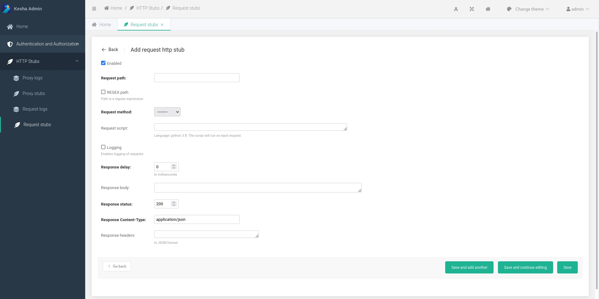
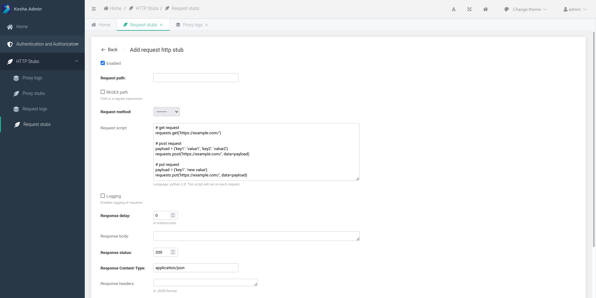

Use request scripts
For using it
- Create an http stub (first steps) 
- In the "request script" field, add a Python script 
About scripts
Request scripts support a secure subset of Python version 3.10.
Additionally, json and requests modules are available to the script.
As well as a special variable that stores the request body request_body.
Examples
Calling external services
# get request
requests.get('https://example.com/')
# post request
payload = {'key1': 'value1', 'key2': 'value2'}
requests.post('https://example.com/', data=payload)
# put request
payload = {'key1': 'new value'}
requests.put('https://example.com/', data=payload)
For more examples, see the official documentation https://requests.readthedocs.io/en/master/.
Parsing the request body in json format
For example, use the preset variable request_body.
request_body is a variable containing a body of the request received by Kesha.
parsed_data = json.loads(request_body)
requests.post(
'https://example.com/',
data={'user': parsed_data['request_user']}
)